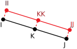

3-D Discrete Reinforcing
REINF264 Element Description
Use REINF264 with standard 3-D link, beam, shell and solid elements (referred to here as the base elements) to provide extra reinforcing to those elements.
The element is suitable for simulating reinforcing fibers with arbitrary orientations. Each fiber is modeled separately as a spar that has only uniaxial stiffness. You can specify multiple reinforcing fibers in one REINF264 element. The nodal locations, degrees of freedom, and connectivity of the REINF264 element are identical to those of the base element.
For smeared reinforcing modeling options, use the REINF263 and REINF265 elements.
REINF264 has plasticity, stress stiffening, creep, large deflection, and large strain capabilities.
For more information, see Reinforcing in the Mechanical APDL Structural Analysis Guide.
Table 264.1: REINF264 Geometry
| 3-D 8-Node Solid or Solid Shell |  3-D 20-Node Solid |
 3-D 4-Node Tetrahedral Solid |  3-D 10-Node Tetrahedral Solid |
 3-D 4-Node Shell |  3-D 8-Node Shell |
| 3-D 2-Node Beam |  3-D 3-Node Beam |
| 3-D 2-Node Spar |
REINF264 Input Data
The geometry and nodal locations for this element are shown in Table 264.1: REINF264 Geometry. The REINF264 element and its base element share the same nodes and element connectivity. Each reinforcing fiber is indicated by its intersection points (II, JJ for linear base elements, and II, JJ, KK for quadratic base elements) with the base elements.
You can easily create REINF264 elements from the selected base elements (EREINF). Section commands (SECTYPE and SECDATA) define the material ID, cross-section area, and location of reinforcing fibers.
REINF264 allows tension-only or compression-only reinforcing fibers. You can specify the desired fiber behavior (SECCONTROL).
The element can account for redundant base element material where the
reinforcing fibers are located
(SECCONTROL,,REMBASE).
The coordinate system for one reinforcing fiber is shown in Figure 264.1: REINF264 Coordinate System. The coordinate system is solely determined by intersection points II, JJ, and KK; therefore, the element coordinate system (/PSYMB,ESYS) is not relevant for this element.
The REINF264 element does not accept element loading. Apply element loading only to the base element. The temperature of the REINF264 element is identical to the temperature of the base element.
You can import an initial stress state for this element (INISTATE). For more information, see Initial State in the Mechanical APDL Advanced Analysis Guide.
A summary of the element input follows.
REINF264 Input Summary
- Nodes
Same as those of the base element, as shown:
Base Element REINF264 Nodes 3-D 8-Node Solid or Solid Shell I,J,K,L,M,N,O,P 3-D 20-Node Solid I,J,K,L,M,N,O,P,Q,R,S,T,U,V,W,X,Y,Z,A,B 3-D 4-Node Tetrahedral Solid I,J,K,L 3-D 10-Node Tetrahedral Solid I,J,K,L,M,N,O,P,Q,R 3-D 4-Node Shell I,J,K,L 3-D 8-Node Shell I,J,K,L,M,N,O,P 3-D 2-Node Beam I,J,K (K is an optional orientation node) 3-D 3-Node Beam I,J,K,L (L is an optional orientation node) 3-D 2-Node Spar I,J - Degrees of Freedom
Same as those of the base element, as shown:
Base Element REINF264 DOFs 3-D 8-Node Solid or Solid Shell UX, UY, UZ 3-D 20-Node Solid UX, UY, UZ 3-D 14-Node Tetrahedral Solid UX, UY, UZ 3-D 10-Node Tetrahedral Solid UX, UY, UZ 3-D 4-Node Shell UX, UY, UZ, ROTX, ROTY, ROTZ 3-D 8-Node Shell UX, UY, UZ, ROTX, ROTY, ROTZ 3-D 2-Node Beam UX, UY, UZ, ROTX, ROTY, ROTZ 3-D 3-Node Beam UX, UY, UZ, ROTX, ROTY, ROTZ 3-D 2-Node Spar UX, UY, UZ - Real Constants
None - Material Properties
TB command: See Element Support for Material Models for this element. MP command: EX, (PRXY or NUXY), ALPX (or CTEX or THSX), DENS, GXY, ALPD, BETD, DMPR - Surface Loads
None - Body Loads
- Temperatures --
Same as those of the base element
- Special Features
Birth and death Initial state Large deflection Large strain Stress stiffening - KEYOPTS
None
REINF264 Output Data
The solution output associated with the element is in two forms:
Nodal displacements included in the overall nodal solution
Additional element output as shown in Table 264.2: REINF264 Element Output Definitions.
The axial stress component is illustrated in Figure 264.2: REINF264 Stress Output.
Unlike layered solid or shell elements (such as SHELL181), REINF264 always outputs the element solution for all reinforcing layers. You can select solution items for a specific reinforcing layer (LAYER) for listing and visualization by using full graphics (/GRAPHICS,FULL). Visualization via PowerGraphics (/GRAPHICS,POWER) is not affected by the LAYER command; all reinforcing layers are displayed simultaneously. See the Basic Analysis Guide for ways to review results.
To inspect REINF264 element results, select only REINF264 element results or adjust the translucency level of the base elements before executing any plotting command. REINF264 display options are also available directly via the GUI ().
The Element Output Definitions table uses the following notation:
A colon (:) in the Name column indicates that the item can be accessed by the Component Name method (ETABLE, ESOL). The O column indicates the availability of the items in the file Jobname.OUT. The R column indicates the availability of the items in the results file.
In either the O or R columns, “Y” indicates that the item is always available, a number refers to a table footnote that describes when the item is conditionally available, and “-” indicates that the item is not available.
Table 264.2: REINF264 Element Output Definitions
| Name | Definition | O | R |
|---|---|---|---|
| EL | Element number and name | - | Y |
| NODES | Nodes (as shown in "REINF264 Input Summary") | - | Y |
| MAT | Material number | - | Y |
| AREA | Averaged cross-section area of reinforcing fibers | - | Y |
| VOLU: | Volume | - | Y |
| XC, YC, ZC | Center location | - | 3 |
| TEMP | T1, T2 for reinforcing fiber 1; T3, T4 for reinforcing fiber 2; ending with temperatures for the last reinforcing fiber NL (2 * NL maximum) | - | Y |
| S:X | Axial stresses | 2 | Y |
| EPEL:X | Axial elastic strains | 2 | Y |
| EPTH:X | Axial thermal strains | 2 | Y |
| EPPL:X | Axial plastic strains | 2 | 1 |
| EPCR:X | Axial creep strains | 2 | 1 |
| EPTO:X | Total axial mechanical strains (EPEL + EPPL + EPCR) | Y | - |
| NL:EPEQ | Accumulated equivalent plastic strain | - | 1 |
| NL:CREQ | Accumulated equivalent creep strain | - | 1 |
| NL:SRAT | Plastic yielding (1 = actively yielding, 0 = not yielding) | - | 1 |
| NL:PLWK | Plastic work/volume | - | 1 |
| N11 | Averaged axial force | - | Y |
| LOCI:X, Y, Z | Integration point locations | - | 4 |
Table 264.3: REINF264 Item and Sequence Numbers lists output available via the ETABLE command using the Sequence Number method. See Creating an Element Table and The Item and Sequence Number Table in this document for more information. The following notation is used in Table 264.3: REINF264 Item and Sequence Numbers:
- Name
output quantity as defined in Table 264.2: REINF264 Element Output Definitions
- Item
predetermined Item label for ETABLE
- E
sequence number for single-valued or constant element data
The i value (where i = 1, 2, 3, ..., NL) represents the reinforcing
fiber number of the element. NL is the
maximum reinforcing fiber number.
REINF264 Assumptions and Restrictions
Zero-volume elements are invalid.
This element can be used only with base element types LINK180, SHELL181, SHELL281, SOLID185, SOLID186, SOLID187, BEAM188, BEAM189, SOLSH190, and SOLID285.
A valid base element must be present for each REINF264 element.
The reinforcing element is firmly attached to its base element. No relative movement between the reinforcing element and the base is allowed.
Through-thickness reinforcing is not permitted in shells and layered solid elements.
Stress stiffening is always included in geometrically nonlinear analyses (NLGEOM,ON). You can activate prestress effects via the PSTRES command.
The warping degree of freedom in beam base elements are not accounted for.
REINF264 does not support BEAM188 with the quadratic or cubic interpolation option (KEYOPT(3)).
To simulate the tension-/compression-only reinforcing fibers, a nonlinear iterative solution approach is necessary.